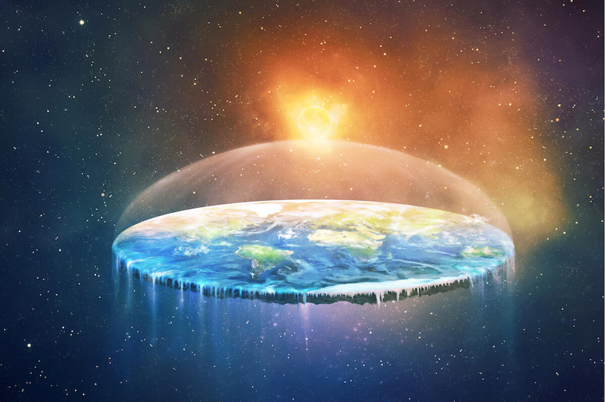

Teoria Płaskiej Ziemi
Teoria płaskiej Ziemi jest jedną z najbardziej znanych i kontrowersyjnych teorii spiskowych. Zwolennicy tej teorii wierzą, że Ziemia nie jest kulą, jak powszechnie akceptuje nauka, lecz płaskim dyskiem.
Historia Teorii Płaskiej Ziemi
W starożytności wiele kultur wierzyło, że Ziemia jest płaska. Z biegiem czasu, wraz z rozwojem astronomii i eksploracją kosmosu, koncepcja kulistej Ziemi stała się powszechnie akceptowana. Jednak mimo przytłaczających dowodów naukowych, teoria płaskiej Ziemi przetrwała w niektórych kręgach.
Główne Założenia
Zwolennicy teorii płaskiej Ziemi przedstawiają kilka głównych założeń:
- Ziemia jest płaskim dyskiem otoczonym lodową ścianą Antarktydy.
- Słońce i Księżyc krążą nad płaską powierzchnią Ziemi, oświetlając jej różne części.
- Zdjęcia Ziemi z kosmosu są fałszerstwami, stworzonymi przez rządy i agencje kosmiczne.
Dlaczego Ludzie Wierzą w Teorię Płaskiej Ziemi?
Wiara w teorię płaskiej Ziemi często wynika z nieufności wobec rządów i instytucji naukowych. Zwolennicy tej teorii wierzą, że istnieje globalny spisek mający na celu ukrycie prawdy o kształcie Ziemi. Niektórzy znajdują także wsparcie dla swoich przekonań w interpretacjach religijnych lub filozoficznych.
Odpowiedzi Nauki
Naukowcy wielokrotnie obalali teorię płaskiej Ziemi, przedstawiając dowody takie jak zdjęcia Ziemi z kosmosu, obserwacje astronomiczne oraz zjawiska naturalne, takie jak krzywizna horyzontu i różnice w czasie wschodów i zachodów Słońca na różnych szerokościach geograficznych.
Przykładem takiej osoby, która udowodniła, dlaczego płaska ziemia nie może istnieć, jest Sci-Fun, który zresztą bardzo fajnie zmontował całą 5-odcinkową serię na ten temat. Więc polecam obejrzeć.
Mimo to, teoria płaskiej Ziemi pozostaje interesującym przykładem, jak teorie spiskowe mogą przetrwać i zyskiwać zwolenników nawet w obliczu przytłaczających dowodów naukowych.